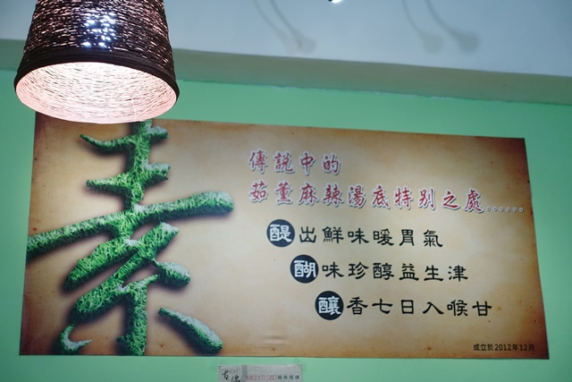
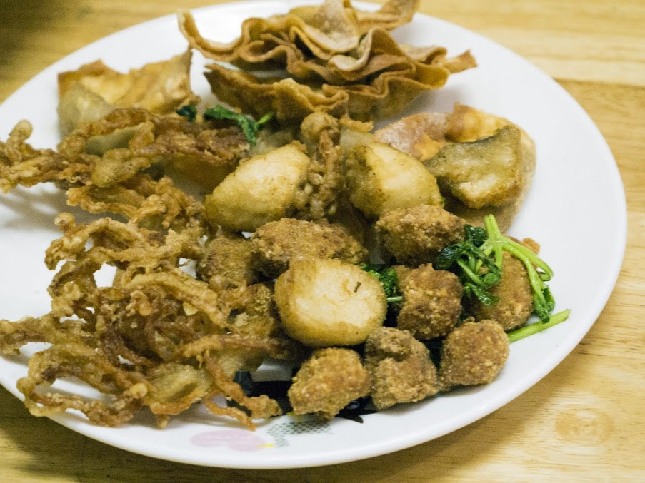
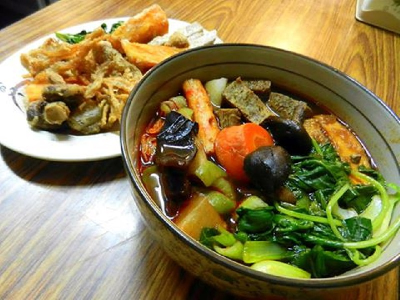
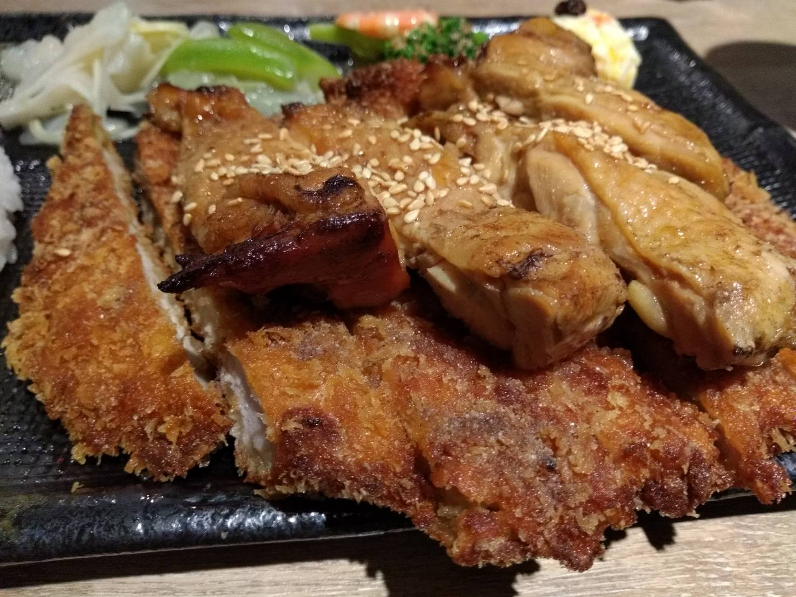
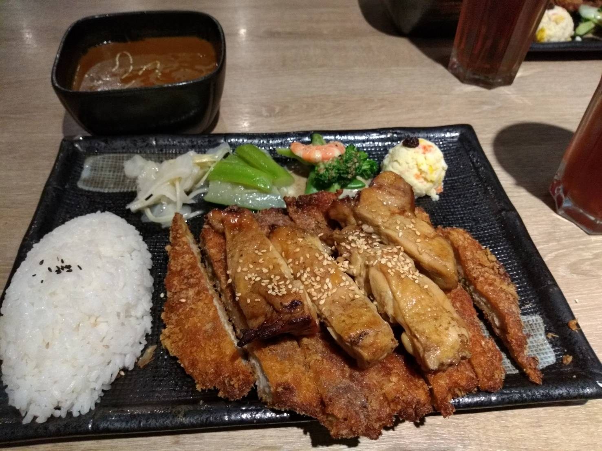

|  | 地址： 97346花蓮縣吉安鄉自立路16號 |
|
在吉安鄉自立路上的茹薰素食，是一家很好吃的素食店，像我這樣不吃素的人很多都覺得他們的料理很好吃不管是 |
 | |
|  | 都讓我不覺得是在吃素食料理，我女朋友本身吃素的人也都很推薦這家店呢~ |
|
地址：970花蓮縣花蓮市中原路610號 |
||
|  | 樂咖哩是一家很好吃的店，最愛吃的就是重量級(豬+雞)可以吃到超大份的豬排吃到爽還可以品嘗到雞排的軟嫩。 |
|
他的咖哩也非常的濃郁部會辣也不會太甜拿來配飯沾豬排都很好吃，也因為份量大所以每次吃都會吃到連隔餐都不用吃了~ |
 |